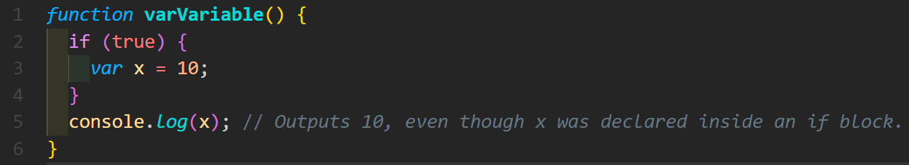
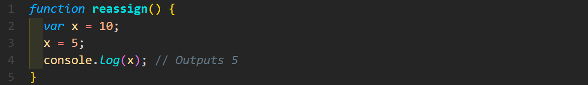
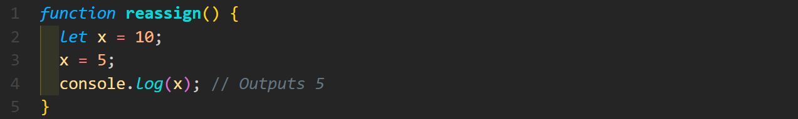
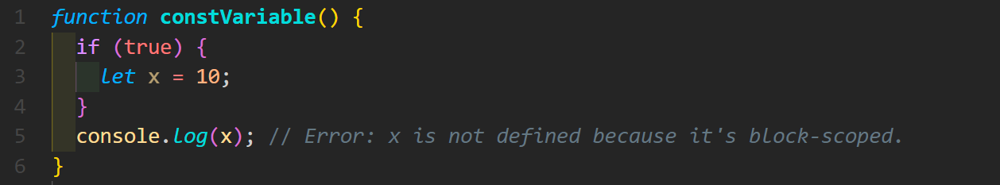
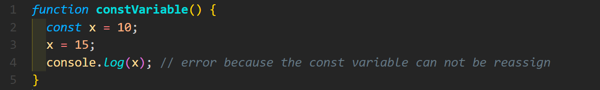

Discuss about scope of var, let, and const
var: Variables defined with “var” are function-scoped, meaning only the function in which they are declared may be accessed. “var” declarations are hoisted to the top of the function or global context in which they are contained. This implies that even if a “var” variable can be accessed before it is declared in the code, it will remain undefined up to that point. For example:
The “var” variable can be reassignable. For example:

let: Variables defined with “let” are block-scoped, which means that only the closest enclosing block, such as a function, loop, or conditional expression, has access to them. Hoisting is not used for “let” declarations, in contrast to “var”. Only after the declaration statement are they available.
For example:
The “let” variable can be reassignable. For example:
const: Variables defined with "const" are also block-scoped, like "let" is. Additionally, "const" declarations are not hoisted. For example:
Variables defined with "const" are intended to be constants and cannot have their original values changed. It's crucial to remember that the attributes or components of objects and arrays that have been defined with const can still be changed. For example:
The use cases of null and undefined
NULL
- Null is frequently used to express explicitly that a variable or object attribute is purposefully empty or has no meaningful value.
- Absence that has been set by a user or developer to denote the absence of a legitimate object, value, or reference.
- When we want to subsequently add a value to a variable or property, null can occasionally be used as a placeholder.
- Null can be used in comparisons to determine whether a variable has been purposefully set to have no value.
UNDEFINED
- When a variable is declared in JavaScript but not given a value, it is by default given the value undefined. This is frequently used as the starting value by default.
- A function inherently returns undefined if it does not explicitly return a value.
- Undefined is returned if we attempt to access an object property that does not exist.
- The missing parameters are undefined if a function is invoked with fewer arguments than its specified parameters.
What do you mean by REST API?
Representational State Transfer Application Programming Interface, or REST API, is an architectural design approach for creating networked applications. It is a collection of guidelines and rules for developing online services that make use of HTTP as its communication protocol. Resources are the main abstractions of a REST API. Resources can represent any item or thing that can be uniquely recognized by a URL (Uniform Resource Locator), such as people, goods, or articles. REST APIs carry out operations on resources using conventional HTTP protocols. The most popular HTTP techniques in REST include:
GET: Clients utilize GET to access server-side resources that are located at the given URL. They can specify parameters in the RESTful API request and cache GET requests to tell the server to filter data before providing it.
POST: To transmit information to the server, clients utilize POST. They send the request together with the data representation. The result of sending an identical POST request more than once is the creation of the same resource more than once.
PUT: Clients utilize PUT to update already existing server resources. In contrast to POST, a RESTful web service responds the same way to numerous PUT requests.
DELETE: To delete a resource, clients submit a DELETE request. The server status can be altered with a DELETE request. However, the request is denied if the user lacks the necessary authentication.